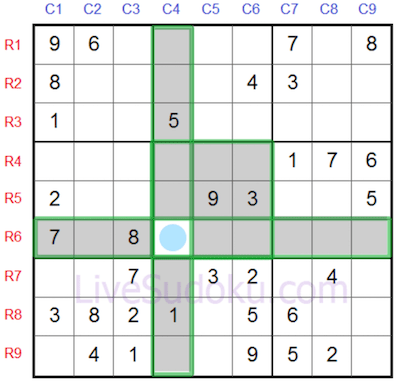
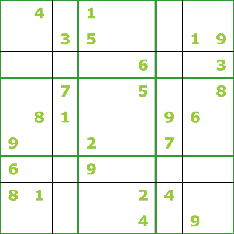

Le nom sudoku (数独) est né de l’abréviation de la règle japonaise du jeu « Sūji wa dokushin ni kagiru » (数字は独身に限る?), signifiant littéralement « chiffre (数字) limité (限る) à un seul (独身) » (sous-entendu par case, par ligne et par colonne). Cette abréviation associe les caractères Sū (数) chiffre et Doku (独) unique. Ce nom est une marque déposée au Japon de l’éditeur Nikoli Corporation Ltd.. En japonais, ce mot est prononcé [sɯː.do.kɯ]écouter ; en français, il est couramment employé avec une prononciation francisée, c’est-à-dire en ignorant la voyelle longue présente sur le premier « u » et en modifiant légèrement le timbre des voyelles « u » : [sy.do.ky]. Au Japon, Nikoli est toujours propriétaire du nom sudoku ; ses concurrents utilisent donc un autre nom : ils peuvent renvoyer au jeu par le nom américain original « Number Place » (anglais : Place numérale), ou encore par le mot « Nampure », plus court. Quelques éditeurs non japonais orthographient le titre « Su Doku ».
Dans l'hebdomadaire pour la jeunesse Le Petit Français illustré (numéro 7 du 13 avril 1889, p. 92), sous le titre général « Problèmes amusants » est proposé le jeu suivant : « Disposer les 9 chiffres, 1, 2, 3, 4, 5, 6, 7, 8, 9, dans les 9 cases de la figure ci-dessous, de telle façon que le total des 3 chiffres de chaque ligne verticale, horizontale et diagonale soit égal à 15. »
Les chiffres ne sont utilisés que par convention, les relations arithmétiques entre eux ne servant pas (sauf dans la variante Killer Su Doku, voir ci-après). N’importe quel ensemble de signes distincts — lettres, formes, couleurs, symboles — peut être utilisé sans changer les règles du jeu. Dell Magazines, le premier à publier des grilles, a utilisé des chiffres dans ses publications. Par contre, Scramblets, de Penny Press, et Sudoku Word, de Knight Features Syndicate, utilisent tous les deux des lettres.
 